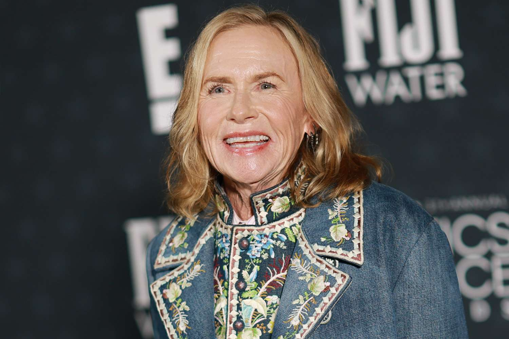
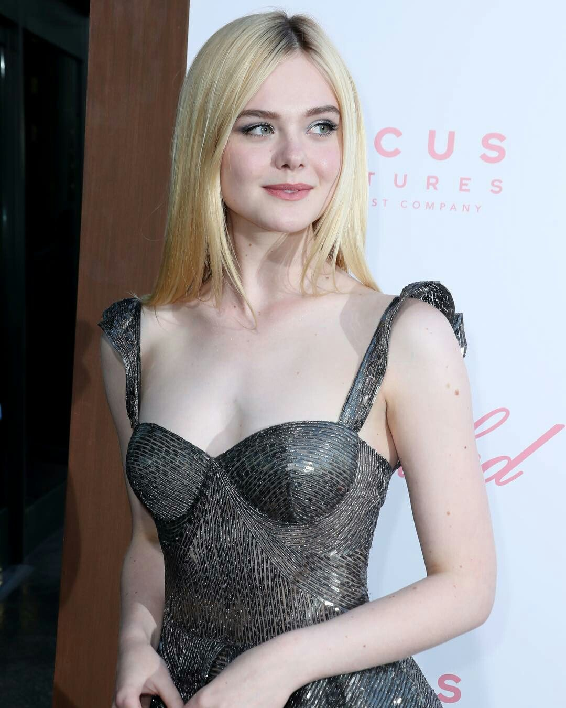
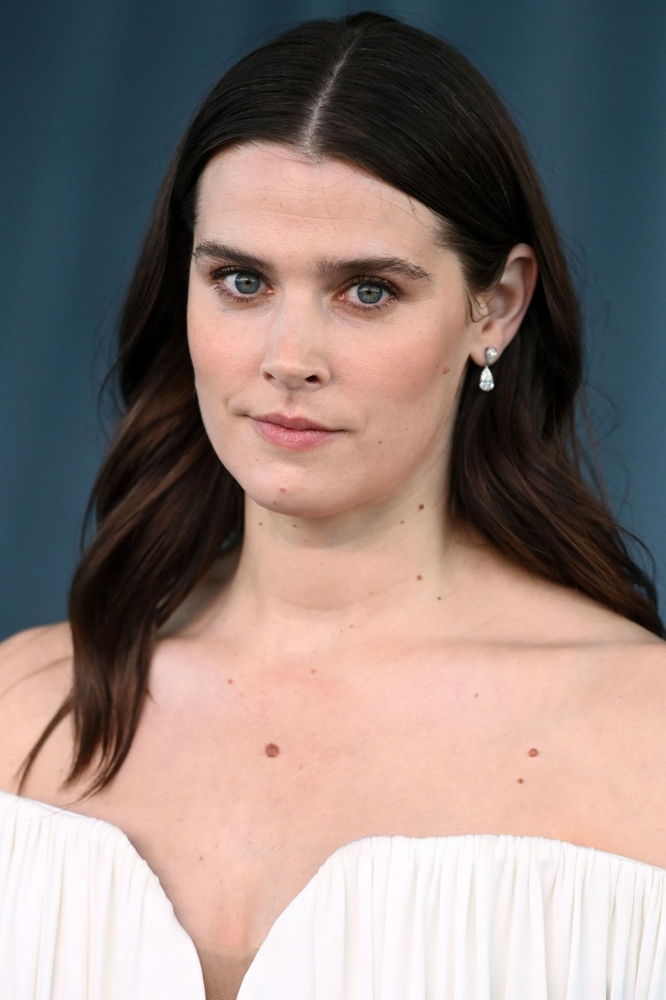
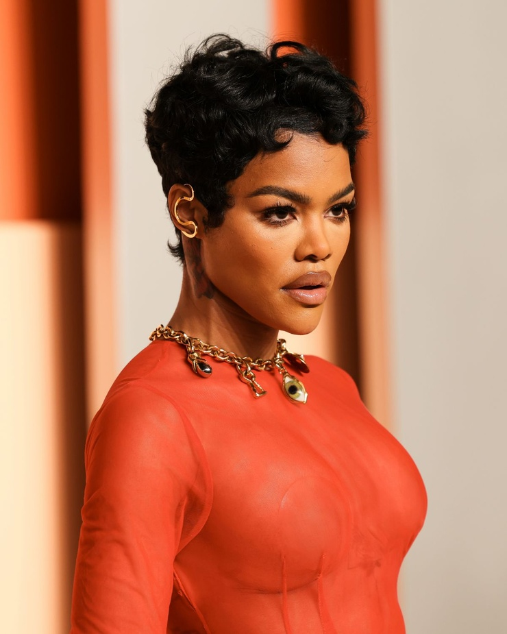

98th Annual Academy Awards
Melhor Atriz Coadjuvante
Conheça as candidatas à Premiação do Oscar 2026 por Melhor Atriz Coadjuvante

Vencedora
Amy Madigan
A Hora do Mal
Sua atuação é fundamental para ancorar o filme na realidade, equilibrando o horror sobrenatural com uma carga emocional humana.
Para a crítica, Amy Madigan entregou uma performance sólida, profissional e convincente, sendo capaz de conferir dignidade e força a um gênero que, muitas vezes, negligencia o desenvolvimento de personagens femininas.

Elle Fanning
Valor Sentimental
Fanning entrega uma performance carregada de mágoa e vulnerabilidade. Ela representa o "custo real" das escolhas da mãe, funcionando como o espelho da realidade em um mundo de ilusões.
Foi amplamente elogiada por sua capacidade de ser severa e terna ao mesmo tempo. Críticos destacaram que ela evita o clichê da "filha rebelde", trazendo uma sofisticação emocional que ajuda a ancorar o arco de redenção (ou aceitação) da personagem principal.

Inga Ibsdotter Lilleaas
Valor Sentimental
Ela traz uma energia distinta e uma presença europeia que contrasta com o cenário decadente de Las Vegas. Sua atuação é mais contida, focada em reações e na observação do ambiente ao seu redor.
Embora o foco maior da imprensa tenha sido em Anderson e Fanning, Lilleaas foi notada por sua naturalidade e por conseguir transmitir muito através do silêncio, servindo como uma peça importante na construção da atmosfera melancólica do filme.
Wunmi Mosaku
Pecadores
Mosaku é conhecida por sua presença imponente e profundidade dramática. Em Sinners, ela entrega uma performance que mistura o medo visceral com uma determinação ferrenha, essencial para o tom de suspense gótico do filme.
A crítica frequentemente a aponta como uma das atrizes mais subestimadas de sua geração. Em Sinners, ela foi elogiada por "roubar a cena" em momentos de alta tensão, utilizando sua expressividade facial para comunicar o terror interno da comunidade retratada.

Teyana Taylor
Uma Batalha Após a Outra
Taylor oferece uma performance crua, feroz e profundamente resiliente como Inez. Ela é o motor do filme, exibindo uma energia inesgotável de sobrevivência.
Foi considerada uma das maiores injustiças das premiações recentes (como o Oscar). A crítica aclamou sua transição para o drama sério, descrevendo-a como uma "força da natureza". Os especialistas destacaram que ela consegue ser intimidante e devastadoramente frágil na mesma cena, elevando o filme de um drama social a um épico íntimo.